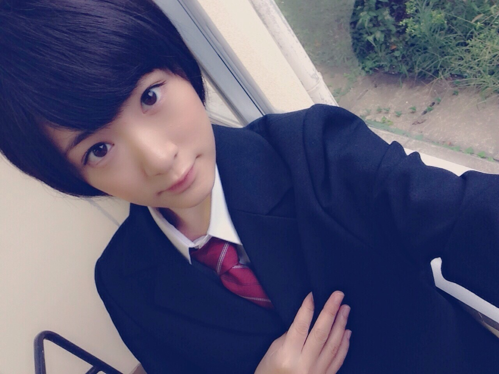

昨日の乃木坂ってどこ
夏休み期間、私は'キャッチボールが出来る様にする'でした！
テレビでは一応成功となっておりましたが、
途中キャッチが出来なくて失敗した自分にイライラして、
テレビではあまり映ってなかったけど、
みさ先輩が練習にずーっと付き合ってくれたり、コーチをしてくださった田野倉先生に申し訳なくてあんな風にグローブを投げてしましました。。。。
あの時は気持ちがいっぱいいっぱいで、久しぶりにテレビで自分の素の感情を出してしましました。
皆さん、メンバーの皆、スタッフさん本当にすみませんでした。
でも自分でも見てて、あちゃ〜ダメだな〜って思いました。
収録終わりに我に返って、反省しました。
一生懸命が空回りばかり。。
一度見直しますね。
ps、何度目の青空か？のMV撮影お仕事あったから途中抜けて戻って来たので全員のシーンいません〜ヽ(・∀・)ノ

へばなっ☆彡